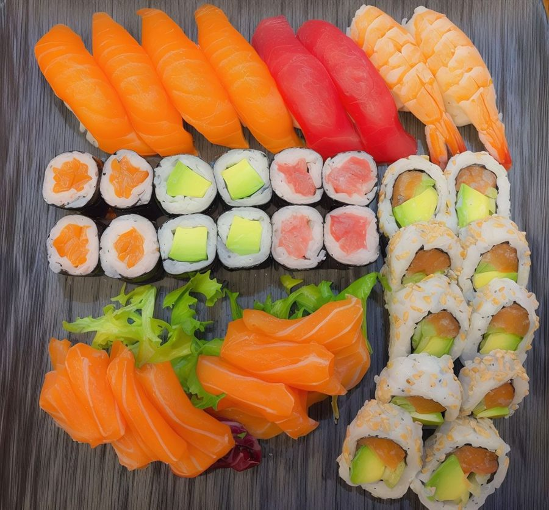
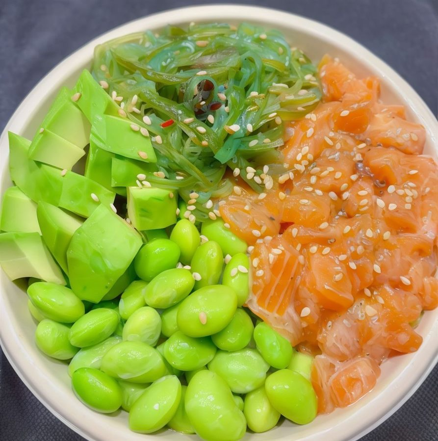

Carrer del Carme, 75 · Girona
Sushi hecho a la vista, pieza a pieza
Nigiris, uramakis, sashimi, pokes y yakisoba preparados al momento con producto fresco. Al mediodía, menú del día.
4,9 en Google · 229 reseñas
La carta
Elige una pieza para ver cada parte de la carta.
Precios de la carta para llevar. En el restaurante, pregúntanos por el menú del día y por las opciones sin gluten o para intolerancias.


Lili y Yao, en la barra
Olasushi es el restaurante de Lili y Yao, que llevan años dedicados a la cocina japonesa. Cada plato se prepara a la vista, en el momento, con ingredientes frescos.
- Cocina a la vista
- Menú del día al mediodía
- Nos adaptamos a intolerancias
- Para tomar aquí o para llevar
4,9 en Google
«Comida espectacular, trato de 10 y local súper acogedor! […] sushi muy bien presentado y muy rico.»
Google
«Comida espectacular a buen precio, sobretodo por la calidad que ofrece. El servicio es de 10 […] Se puede ver cómo preparan tus platos.»
Google
«Buen servicio y calidad-precio. El menu de día es completo y variado. Servicio muy amable y atento. Se adaptan a las intolerancias.»
Google
«La comida es muy deliciosa y los ingredientes son super frescos.»
Google
Ven a comer o pide para llevar
- Dirección
- Carrer del Carme, 75 · 17004 Girona
- Horario
- Martes a sábado
12:30 – 15:15 · 19:00 – 22:15
Domingo cerrado